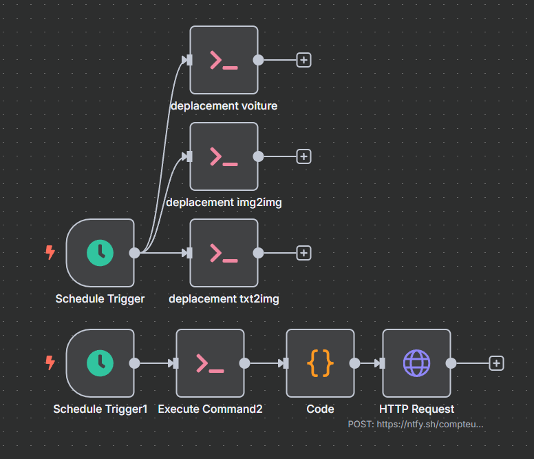
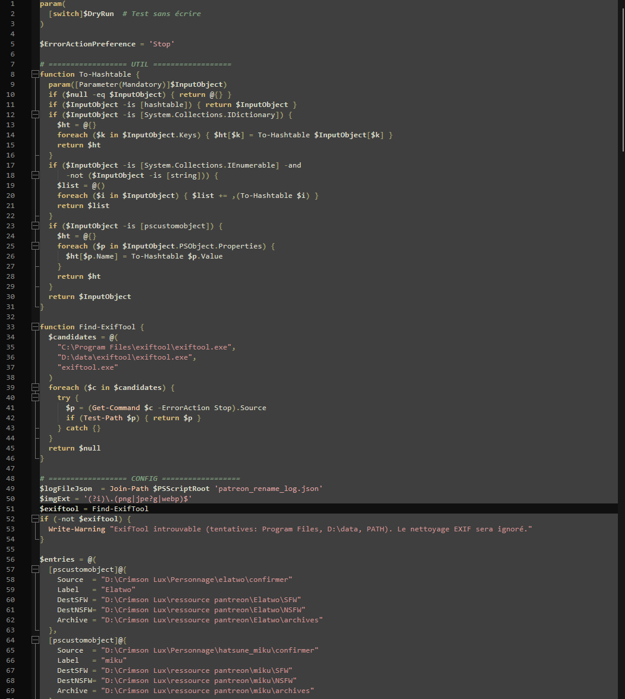

Crimson Lux
Pipeline d'automatisation IA pour la génération, le traitement et l'organisation d'images à grande échelle.
Contexte du système
Crimson Lux est un projet d'automatisation complète du workflow de génération d'images par IA. L'objectif était de créer un système capable de générer, traiter et organiser automatiquement des milliers d'images selon des critères prédéfinis.
Objectifs techniques
- Automatiser la génération d'images via API IA
- Implémenter un système de tri intelligent
- Organiser automatiquement les fichiers
- Optimiser le workflow de production
Technologies mobilisées
- Python (automatisation & scripting)
- PowerShell (gestion de fichiers et tri batch)
- APIs IA (génération d'images haute résolution)
- Traitement et filtrage d'images
- Architecture de pipeline end-to-end
Résultats obtenus
- Pipeline entièrement automatisé sans intervention manuelle
- Gain de temps significatif sur la chaîne graphique
- Organisation optimale et indexation des assets
- Système scalable et maintenable dans le temps
[DIAGRAMME 01] — FLUX DE GÉNÉRATION ET TRAITEMENT

[DIAGRAMME 02] — PIPELINE DE DISTRIBUTION MULTI-CANAL

Architecture du Pipeline
- Collecte de prompts depuis Civitai
- Nettoyage et standardisation via IA
- Génération d'images avec Stable Diffusion
- Classification automatique (metadata, SFW/NSFW)
- Publication multi-plateformes via N8N
- Base de données centralisée (Google Drive / Sheets)
Ce que ce projet démontre
- Conception d'architecture système scalable
- Orchestration d'outils IA et automatisation
- Intégration multi-API (génération, publication, stockage)
- Gestion de workflows end-to-end
- Approche orientée amélioration continue
Pistes d'amélioration
- Système de scoring automatique des prompts
- Classification custom par style artistique
- Orchestrateur IA pour optimisation du pipeline
- Dashboard analytics en temps réel
- Génération de vidéos (reels automatisés)
Script de Tri Automatique PowerShell

Script PowerShell pour l'organisation et la classification automatique des fichiers générés
Résultat de prompt brut de Civitai sans contrôle de cohérence
Résultat après normalisation et ajouts des personnages automatique, structure optimisée